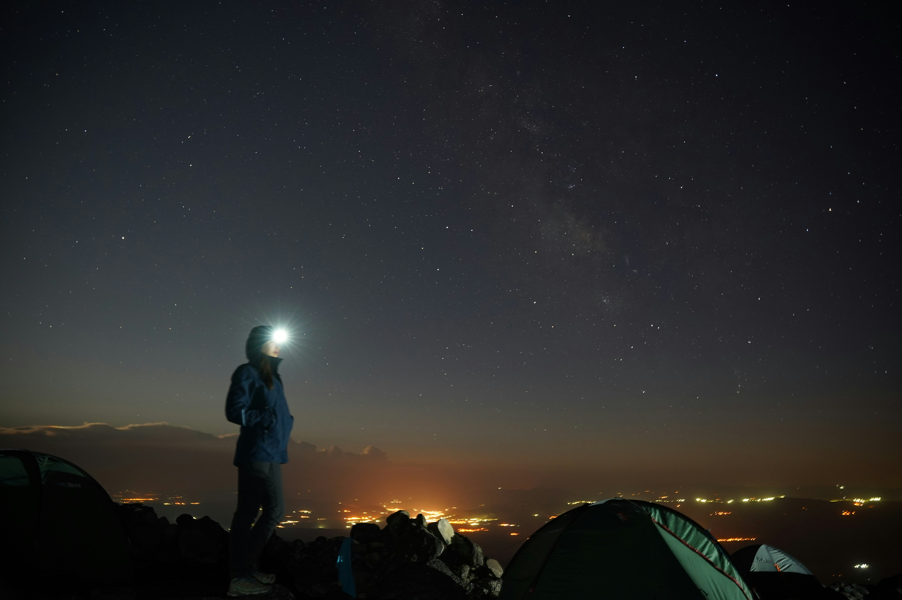

インターステラー
壮大な宇宙とストーリーに鳥肌がすごい

Photo By Olena Kamenetska on Unsplash出身は長野で現在は千葉の大学で情報通信を勉強しています。趣味は映画館で映画を
見ることです。前までは洋画を主に見ていましたが最近は邦画も見るようになりました。現在プログラミングを勉強していてますこのサイトもその勉強の一環として作成しました今後はプログラミング以外の分野も開拓していきたいと思ってます
壮大な宇宙とストーリーに鳥肌がすごい
血か過ごした時間か、父親の成長に泣ける
キング・オブ・ポップの伝説と名曲に痺れる
これからも付け加えたいことがあったらつどサイトを更新していく予定です。